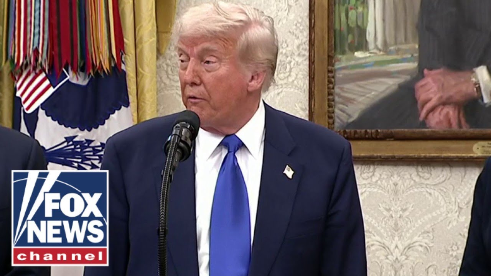

来B站一起耍【Global每日英语简报】
【特朗普回应AI教皇图片，指责“假新闻媒体”】
Summary: Trump discusses an AI-generated image of him as the Pope, blaming the fake news media for the controversy while dismissing it as a harmless joke.
摘要： 特朗普讨论了一张将他描绘成教皇的AI生成图片，将争议归咎于假新闻媒体，并称这只是个无害的玩笑。

⏱️ Estimated Reading Time: 2 min
Thank you, Mr. President.
谢谢您，总统先生。
Some Catholics were not so happy about the image of you looking like the Pope.
一些天主教徒对您看起来像教皇的图片不太高兴。
Oh, I see.
哦，我明白了。
You mean they they can't take a joke?
你是说他们开不起玩笑？
You don't mean the Catholics.
你不是指天主教徒。
You mean the fake news media.
你指的是假新闻媒体。
Not the Catholics loved it.
不是天主教徒喜欢它。
I had nothing to do with it.
我与它无关。
Somebody made up a picture of me dressed like the Pope and they put it out on the internet.
有人编造了一张我穿着教皇服装的图片，并把它发布到网上。
That's not me that did it.
那不是我做的。
I have no idea where it came from.
我不知道它从哪里来的。
Maybe it was AI, but uh I know nothing about it.
也许是AI，但我对此一无所知。
I just saw it uh last evening.
我昨晚才看到它。
Actually, my wife thought it was cute.
实际上，我妻子觉得它很可爱。
She said, "Isn't that nice?"
她说：“这不是很好吗？”
My question about Actually, I would not be able to be married, though.
我的问题是，实际上，我不能结婚。
That would be a lot.
那会很麻烦。
I'd have to the best of my knowledge, popes aren't big on getting married, are they?
据我所知，教皇不太喜欢结婚，对吧？
Not Not that we know of.
据我们所知，没有。
No. No.
不，不。
I think it's a fake news media that, you know, they they're fakers.
我认为是假新闻媒体，你知道，他们是骗子。
My question though, sir, was about the fact that it was put out on the White House account.
不过，先生，我的问题是它被发布在白宫账号上。
Even though it was AI generated, it was a joke, it was a meme.
尽管它是AI生成的，是个玩笑，是个梗。
Does it at all diminish the substance of the official White House account to have it go out on fact?
它是否在事实上削弱了白宫官方账号的严肃性？
Give me a break.
别闹了。
Just it was just somebody did it in fun.
只是有人开玩笑做的。
It's fine.
没关系。
Have to have a little fun.
总得有点乐趣。
Hey, Sean Hannity here.
嘿，我是肖恩·汉尼提。
Hey, click here to subscribe to Fox News YouTube page and catch our hottest interviews and most compelling analysis.
嘿，点击这里订阅福克斯新闻YouTube频道，获取我们最热门的采访和最引人入胜的分析。
You will not get it anywhere else.
你在其他地方都看不到。